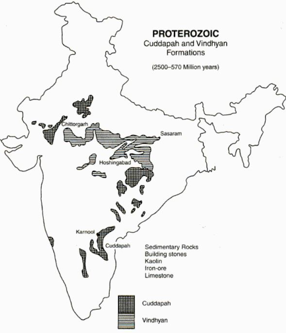

Geological Structure of India
The Geologic Time Scale
The Archean Formations
Features
- Made up of Meta-morphic Igneous rocks known as Gneiss (Orthogneiss)
- Unfossiliferous rocks, devoid of any sediments
- These rocks are the foundation of the ancient plateaux and they form the core of all the greatest folded mountain ranges of the world
- Occurs mainly in Maharashtra, Tamil Nadu, Karnataka, Andhra Pradesh, Orissa, Jharkhand, West Bengal
- Also occurs in Aravallis, Bundelkhand and Mikir hills (Assam)
- Archean rocks are repositories of mineral wealth such as iron-ore, copper, manganese, mica, gold and silver
- Archean rocks are known to be of 3 well defined types Bengal Gneiss, Bundelkhand Gneiss and the Nilgiri Gneiss
Map of Archean Formations
The Proterozoic Formations
The Dharwar System
Features
- Oldest Metamorphic Sedimentary rocks
- Studied first time in Dharwar of Karnataka
- Composed of igneous debris, schists and gneiss (Paragneiss)
- Occurs in Dharwar, Bellary and Hospet of Karnataka Chotanagpur plateau, Upper reaches of Godavari and in the Aravallis
- Highly metalliferous, rich in iron-ore, manganese, mica, copper, zinc, lead, silver, gold, slate, asbestos
Map of Dharwar Formations

Vindhyan and Cuddapah System
Features
- Cuddaph system rocks are made up of Sandstone, shales, limestone, quartzite etc Metamorphic Sedimentary rocks
- Generally without fossils
- Consists of inferior qaulity ores due to low metal content
- Cuddapah system occupies Cuddaph, Kurnool Chattisgarh, Rajasthan-Delhi (South of Alwar)
- Vindhyan system is a vast deposit of Metamorphic Sedimentary rocks well known for its Red sandstones, building material, conglomerates etc.
- Well known diamond mines of Panna and Golconda lie in the Vindhyan system
- It covers an extensive area from Chittorgarh in Rajasthan to Sasaram in Bihar.
- The Great Boundary Fault (GBF) seperates the Vindhyan system from the Aravallis
Map of Cuddapah and Vindhyan

Paleozoic Formations
- It marks the begining of the diversification of life on Earth (Cambrian Explosion)
- Formations of this period are almost absent in Peninsular India
- Some sites include Salt-range, Pir Panjal, Spiti, Kangra, Simla, Garhwal and Kumayun
- Pangaea broke up and the Tethys Sea came into existence
- Cambrian rocks include Shales, quartzite, clay, slates, salts, marbles etc
Mesozoic Formations
Gondowana Formations
- This was the period of coal formation
- Formations present in Damuda and Talcher
- Indias largest coal deposit sites are
- Damodar Valley of West Bengal
- Jharkhand
- Mahanadi Valley of Odisha
- Chattisgarh
- Godavari Valley of Andhra Pradesh
- Satpura Basin of Madhya Pradesh
Talcher Series
- Named after Talcher and Dhankenal districts of Odisha
- Rich in good quality coal
Damuda Series
- Belongs to middle Gondwana period
- Contains enormous deposits of coal seams
- Jhingurla Coal Seam is the thickest in India with a thickness of 131 metre
- The important coal bearing areas are Raniganj, Jharaia, Karanpura, Bokaro, Singaruli, Korba, Pench etc
Map of Gondwana Formations
Cretaceous System
- From 146 to 66 Million years ago
- Intense volcanic activity caused the 3km thick layer of Basalt to form
- This formation is the Lava Plateau or the Deccan trap covering parts of Gujarat, Maharashtra, Madhya Pradesh, Chattishgarh, Jharkhand, northern Andhra Pradesh
- This formation also rich in quartz, bauxite, magnetite
Map of Cretaceous Formations
Cenozoic Formations
Tertiary System
- Abundance of fossilized rocks
- Final breaking up of the old Gondwana continent
- Upheaval of the Himalayas
Quarternary Formations
- Recent deposits containing fossils of living species
- The northern plains of India came into existance in the Pleistocene Period
- This period is marked by Ica Age and the glaciation on a large scale in Northern Hemisphere
- The Karewas are a formation of this period made up of sands, clays silts and boulders
- The river terraces of Narmada, Tapi, Godavari, Krishna, Kaveri etc are formed during this period
Map of Quarternary formations